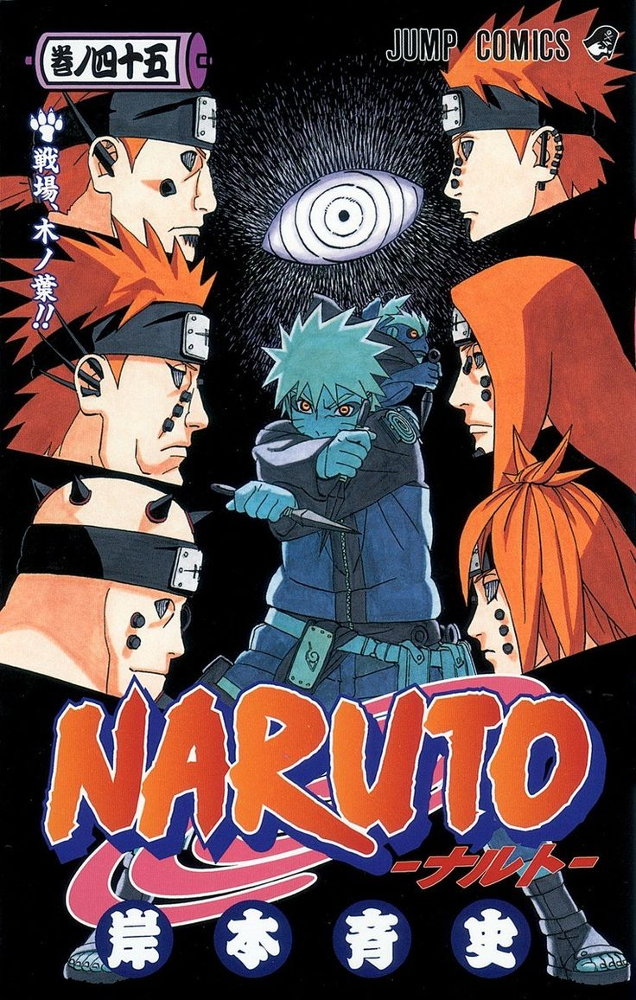
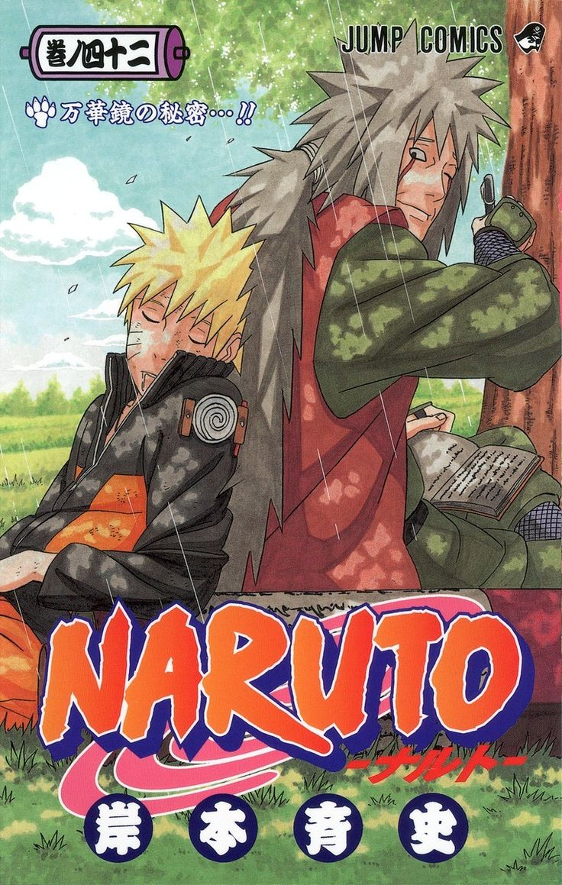

Beberapa Volume Manga Naruto


.jpg)

.jpg)

Manga Naruto pertama kali diterbitkan di Jepang oleh Shueisha pada tahun 1999 dalam edisi ke-43 majalah Shonen Jump. Di Indonesia, manga ini diterbitkan oleh Elex Media Komputindo. Popularitas dan panjang seri Naruto sendiri (terutama di Jepang) menyaingi Dragon Ball karya Akira Toriyama
Masashi Kishimoto pertama kali membuat one-shot Naruto pada Agustus 1997 ke dalam edisi Akamaru Jump. Meskipun hasil polling pembaca sangat tinggi dan bernilai positif, Kishimoto berpikir "desain dan cerita berantakan!". Kishimoto awalnya bekerja pada Karakuri untuk Hop Step Award. Tidak puas dengan desain kasar, ia memutuskan untuk bekerja pada sesuatu yang berbeda, yang kemudian dibuat menjadi seri manga Naruto. Kishimoto yakin seri ini akan menjadi manga yang nyaman untuk dibaca.
Ketika Masashi Kishimoto awalnya menciptakan serial Naruto, dia melihat pada manga shōnen lainnya untuk memberikan inspirasi terhadap dirinya ketika membuat sebuah karakter yang unik. Dia tetap mendasarkan cerita itu dari budaya Jepang. Pemisahan karakter ke dalam tim yang berbeda dimaksudkan untuk memberikan rasa tertentu terhadap masing-masing kelompok. Kishimoto berharap setiap anggota tim harus "kerja keras", untuk mendapatkan bakat dalam atribut tertentu. Kishimoto menyisipkan peran jahat ke dalam cerita untuk melawan nilai-nilai moral dalam karakter utama. Dia menyatakan bahwa fokus pada penggambaran perbedaan nilai-nilai merupakan inti dari buatannya, "Saya tidak benar-benar berpikir tentang mereka dalam pertempuran".
Naruto awalnya merupakan manga yang pertama kali diterbitkan di majalah Weekly Shonen Jump pada tahun 1999.